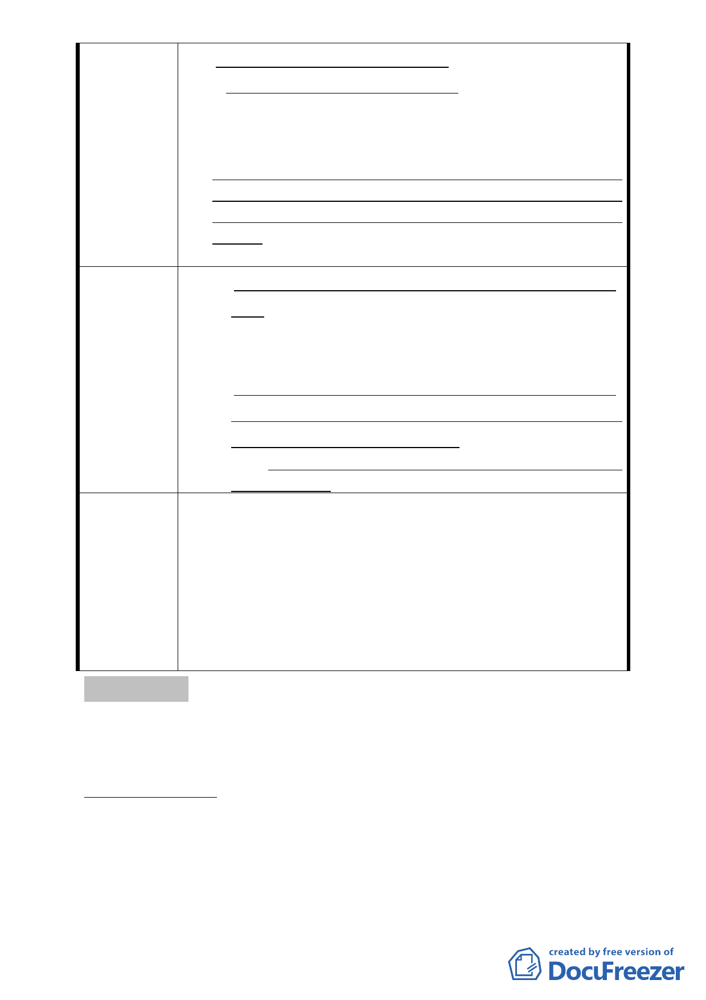

自力更新資金不易取得銀行融資。
（三）「策略性再開發地區」機制課題-
依都市更新建築容積獎勵辦法規定，實施者須依第 7 條、
第 8 條及第 10 條申請獲准獎勵且更新後集中留設公共開
放空間達基地面積 50％以上者，整建住宅基地符合不易；
且又規定增加之獎勵建築容積於扣除更新成本後增加之
收益，實施者須自願以現金捐贈當地地方主管機關設立之
都市更新基金（其捐贈比例以 40％為上限），整建住宅更
難達成。
（一）市府成立專案小組，研議整宅課題之可行方案並專案
推動，方能真正落實馬總統<愛台灣十二建設>「藉由推
動都市更新，以振興老舊及發展落後地區的經濟活力，
並促進城鄉均衡發展及所得均衡分配。」之政策原意。
建 議 辦 法 （二）針對指定為「策略性再開發地區」後，經自力更新仍
無法達到臺北市平均居住水準之整宅（如水源整宅 4、
5 期整宅等）另行研議可行方案。
（三）本案是否須適用「策略性再開發地區」之回饋機制，
建議應予明定。
一、通案而言，基於對整建住宅採都市更新之支持，同意本
案指定為策略性再開發地區並提高其獎勵後之建築容積
可達二倍之法定容積。
委員會決議 二、未來針對個案基地採行更新時，為提高其可行性，必要
時其容積得循程序續提委員會再做調整。
三、所擬建議錄請市府供後續作業參考辦理。
討論事項 四
案名：劃定臺北市大安區仁愛段六小段 534 地號等 39 筆土地為更
新單元
案情概要說明：
一、本案位於敦化南路一段以東、敦化南路一段 161 巷以南、敦
化南路一段 187 巷以北，以及忠孝東路四段 147 巷以西所圍
街廓範圍內，面積 1,712 平方公尺。
二、本更新單元土地使用分區為敦化南北路特定專用區（A）區，
-8-